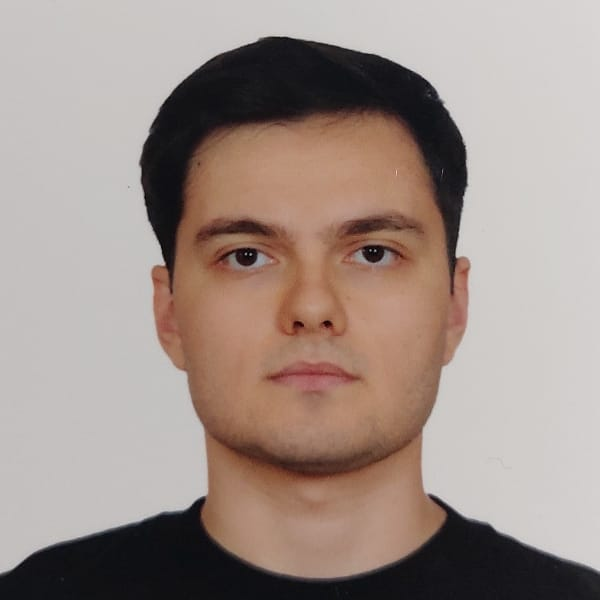
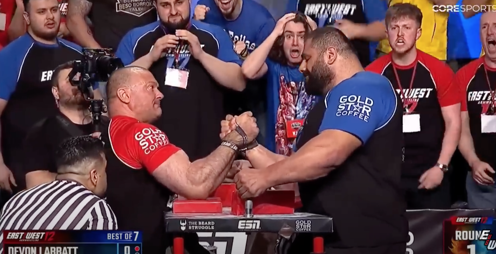
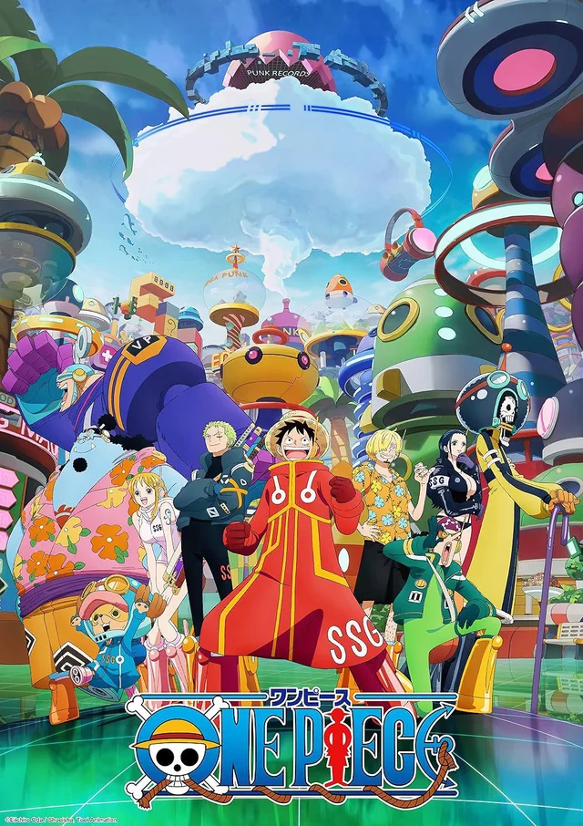

PORTREM
Gözlem, mantık (Logos) ve teknolojinin kesişim noktasında bir yaşam. YTÜ BÖTE öğrencisi, analitik düşünür ve teknoloji meraklısı.
Projelerimi Gör
Profil ve Biyografi
Biyografi
- Doğum: 11.07.2002 (Yengeç Burcu)
- Fiziksel: 180cm / 90kg
- Konum: İstanbul, Türkiye
- Eğitim: Yıldız Teknik Üniversitesi (BÖTE)
- Kimlik: Gri Türk (Sosyokültürel), Caucasian (Biyolojik)
Karakter
Retorik üçgenin Logos (Mantık) çağrısını benimsemiş, gözlem yönü gelişmiş biriyim. Kısmen münterif (bağımsız/tekil) bir yaşam sürerim.
"İdefiks (sabit fikirli) değilim; otoriteye dayalı safsataları (Argumentum ad Verecundiam) sorgularım."
Tutku Alanlarım
Bu alanlar sadece bir hobi değil, aynı zamanda yeteneklerimi geliştirdiğim ve takipte kaldığım dünyalar.

SPORA OLAN İLGİM
Vücut geliştirme, bilek güreşi ve yüzme sporlarını bir izleyici ve uygulayıcı olarak yakından takip ediyorum.
TEKNOLOJİ AÇLIĞIM
Sürekli gelişen dijital dünyaya karşı bir "teknoloji açlığı" hissediyor ve tüm yenilikleri yakından izliyorum.

SANAT MERAKIM
Sinema, diziler ve animeler. İyi anlatılmış hikayelerin ve kompleks karakterlerin peşindeyim.